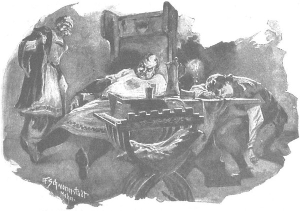

Ông Maćko đã sẵn sàng lên đường, nhưng suốt hai ngày liền Jagienka không ló mặt sang Bogdaniec, bởi cô còn bàn bạc với chàng trai Séc. Mãi đến ngày thứ ba, hôm Chúa nhật, trên đường tới nhà thờ, vị hiệp sĩ lớn tuổi mới gặp cô. Cô tới Krześnia cùng em trai Jaśko và một đoàn tùy tùng đông đúc gồm các gia nhân có vũ trang, bởi cô vẫn e ngại gã Cztan và Wilk sẽ tấn công.
- Cháu vẫn định sau lễ misa sẽ ghé sang Bogdaniec, - cô nói sau khi chào hỏi ông Maćko, - cháu có việc rất gấp phải thưa, giờ ta có thể nói chuyện ngay.
Nói đoạn, cô vượt lên trước đoàn tùy tùng, hẳn là không muốn để gia nhân nghe câu chuyện. Khi ông Maćko thúc ngựa lên kịp, cô hỏi:
- Chắc chắn bác sẽ đi chứ?
- Cầu Chúa, ngay ngày mai, không muộn hơn được nữa.
- Đến thành Malborg?
- Đến Malborg hoặc không. Tùy sự thể.
- Vậy xin bác hãy nghe cháu nói. Cháu đã suy nghĩ rất lâu, giờ cháu muốn hỏi ý bác. Bác biết đấy, khi cha cháu còn sống, cha tu viện trưởng còn sáng suốt, mọi chuyện khác hẳn. Cztan và Wilk nghĩ rằng cháu sẽ chọn một trong hai nên chúng kiềm chế lẫn nhau. Nhưng giờ cháu còn mỗi mình, không ai che chở, thì cháu đành phải chịu ngồi ru rú bên trong hàng rào trang Zgorzelice như ở tù, nếu không trước sau sẽ bị chúng xúc phạm. Bác xem có đúng vậy không?
- Ha, bác cũng nghĩ mãi về việc ấy. - Ông Maćko nói.
- Thế bác nghĩ ra được gì chưa?
- Bác chưa nghĩ ra được điều gì hay, nhưng cháu nên biết rằng vùng ta vẫn thuộc đất Ba Lan, mà hiến pháp có những hình phạt kinh khủng dành cho những kẻ hiếp đáp đàn bà con gái. [202]
- Vâng, nhưng vượt sang bên kia biên giới chẳng khó gì. Vùng Śląsk [203] cũng là đất Ba Lan đấy thôi, thế mà ở đó các quận công vẫn gầm ghè tấn công lẫn nhau. Nếu không thế, hẳn người cha kính yêu của cháu vẫn còn sống. Mà bọn Đức cũng đã mò được vào đấy, chúng phá phách và hiếp đáp dân lành, kẻ nào muốn trốn sang hàng ngũ chúng là trốn được ngay. Nếu chỉ có một mình, cháu không ưng cả Cztan lẫn Wilk cũng được, nhưng lại còn các em cháu nữa. Cháu không có mặt ở đây là yên, cháu còn ở lại Zgorzelice ngày nào thì họa có Chúa mới hay sẽ xảy ra chuyện gì. Chẳng thể tránh được chuyện tấn công, đánh nhau, mà em Jaśko năm nay đã mười bốn, không ai có đủ sức kìm giữ nó, nói gì tới cháu. Lần vừa rồi, lúc bác đến cứu chúng cháu ấy, nó lao lên hàng đầu, suýt nữa bị thằng Cztan phang cho một đòn nát sọ. Hey! Jaśko nói với gia nhân là thể nào cũng có lúc nó thách cả hai thằng kia quyết đấu. Thưa bác, cháu sẽ không có được một ngày yên ổn, nếu bọn trẻ gặp phải chuyện chẳng lành.
- Phải! Thật là đồ chó đẻ! - Ông Maćko thốt lên. - Cả Cztan lẫn Wilk. Nhưng chúng chẳng dám vung tay lên đánh con trẻ đâu. Phù! Chuyện đó thì ngoài bọn Thánh chiến, chẳng ai dám làm.
- Chúng chẳng đánh trẻ con, nhưng trong đám lộn xộn, hey - lạy Chúa che chở cho con - trong hỏa hoạn, thì chẳng khó gì gặp phải chuyện không lành. Mà nói làm gì hả bác! Bà Sieciechowa yêu lũ trẻ như con đẻ, chăm sóc chúng hết lòng, nếu không có cháu ở đây thì chúng sẽ được yên ổn hơn.
- Cũng có thể. - Ông Maćko nói.
Rồi ông đưa mắt liếc nhanh sang cô gái:
- Vậy cháu muốn gì?
Cô hạ giọng đáp:
- Bác cho cháu theo với.
Nghe thấy thế, mặc dù chẳng khó đoán trước đoạn kết của câu chuyện, ông Maćko vẫn rất ngạc nhiên, ghìm ngựa lại, kêu lên:
- Cháu phải biết sợ Chúa chứ, Jagienka!
Cô cúi đầu, rụt rè và như buồn bã thốt lên:
- Bác ơi! Cháu nghĩ thà nói thật còn hơn giấu kín trong lòng. Cả Hlava làn bác đều bảo rằng anh Zbyszko sẽ chẳng bao giờ tìm lại được cô gái ấy, gã Séc còn đoán trước điều tệ hại hơn. Xin Chúa chứng giám cho, cháu không bao giờ cầu mong điều dữ cho cô ấy. Cầu xin Đức Mẹ chở che và bảo vệ cô ấy cho chàng. Với Zbyszko, cô ấy là người đáng yêu hơn cháu, biết làm sao! Phận cháu đành thế thôi! Nhưng bác biết không, nếu như Zbyszko chưa tìm được, hoặc nếu như bác nói - không tìm lại được nữa, thì… thì…
- Thì sao? - Ông Maćko hỏi gặng, khi thấy thiếu nữ càng lúc càng bối rối và ngắc ngứ.
- Thì cháu không muốn là của Cztan, Wilk hay bất kỳ ai khác.
Ông Maćko thở một hơi dài khoan khoái.
- Thế mà bác tưởng là cháu quên nó rồi. - Ông bảo.
Cô gái đáp lại, giọng càng buồn bã hơn:
- Hey!
- Thế cháu muốn sao? Ta đưa cháu sang đất bọn Thánh chiến ư?
- Không nhất thiết phải sang bên ấy. Lúc này cháu chỉ muốn đến với cha tu viện trưởng, người đang dưỡng bệnh ở thành Sieradz. Nơi ấy, cha chẳng có ai thân thích, bọn gia nhân chắc là ham be rượu hơn việc chăm sóc cha, mà cha là cha đỡ đầu, là ân nhân của cháu. Giá như cha còn khỏe thì có lẽ cháu vẫn đến nương nhờ cha che chở, bởi mọi người đều rất sợ cha.
- Bác chẳng phản đối gì việc đó. “ Ông Maćko bảo. Thực ra ông rất hài lòng trước quyết định của Jagienka, bởi vốn đã quá rõ tâm địa của bọn Thánh chiến, ông tin chắc rằng Danusia không thể thoát khỏi tay bọn chúng. - Nhưng bác phải nói thật với con rằng dẫn theo phụ nữ đi đường rất phiền toái.
- Với người khác có thể là phiền, chứ với cháu thì không. Cho đến nay cháu chưa đánh nhau tay đôi bao giờ, nhưng với cháu chuyện bắn nỏ múa thương và chịu đựng gian khổ khi đi săn chẳng phải là chuyện gì mới. Khi cần cháu sẽ chịu được hết, bác đừng ngại. Cháu sẽ mặc áo quần của Jaśko, đội mạng che tóc, thắt đoản kiếm vào lưng là có thể đi luôn. Tuy trẻ hơn nhưng Jaśko chẳng nhỏ con hơn cháu, mặt mũi thì giống y cháu, đến nỗi dạo nọ, trong ngày cuối hội hóa trang, khi chúng cháu thay đổi quần áo cho nhau, thân phụ đã quá cố của cháu không tài nào nhận ra đâu là em nó, đâu là cháu… Rồi bác sẽ thấy, cả cha tu viện trưởng lẫn những người khác chẳng nhận ra cháu đâu.
- Cả Zbyszko cũng thế à?
- Nếu như được gặp anh ấy…
Ông Maćko ngẫm nghĩ một lúc, rồi chợt mỉm cười và bảo:
- Thằng Wilk trang Brzozowa và Cztan trang Rogowo sẽ điên tiết lắm đây!
- Mặc chúng nó cáu. Chỉ lo chúng bám theo ta thôi.
- À, đừng lo. Bác già thật, nhưng tốt nhất chớ giở trò với bác. Và với những người khác của dòng họ Mưa Đá!… Chúng nó cũng đã thử sức với Zbyszko rồi đấy thôi!
Mải chuyện, họ vừa tới Krześnia. Trong nhà thờ đã có mặt ông lão Wilk trang Brzozowa - người thỉnh thoảng vẫn liếc ông Maćko với ánh mắt quàu quạu, nhưng ông Maćko không thèm để ý. Lòng nhẹ nhõm, sau lễ misa, ông cùng Jagienka trở về nhà. Nhưng sau khi chia tay, một mình về đến Bogdaniec, trong đầu ông lại nảy ra những ý nghĩ kém phần vui vẻ. Ông hiểu là khi Jagienka ra đi, quả thực không có gì đe dọa trang Zgorzelice cùng các em cô nữa.
“Con bé ở nhà thì bọn chúng có thể sẽ ra tay,” ông tự nhủ, “đó là việc khác, nhưng chúng sẽ chẳng động đến bọn trẻ mồ côi hay điền sản của nó đâu, bởi chúng sợ sẽ chuốc lấy nỗi ô nhục và bị mọi người chống lại như một lũ sói. Nhưng thế nghĩa là cũng đành phải để lại cả trang Bogdaniec này nữa, phó mặc rủi may nhờ lượng Chúa!… Chúng có thể sẽ san bằng gò đống, cướp hết trâu bò, xua đuổi nông nô!… Xin Chúa, nếu trở về ta sẽ cướp lại, sẽ gửi đơn kiện gọi chúng ra tòa, bởi ở đất này không chỉ có nắm đấm trị vì mà còn có luật pháp!… Chỉ có điều không biết ta có còn trở lại đây được nữa không và bao giờ mới trở lại?… Chúng căm ta lắm, vì ta đã ngăn trở chúng hiếp đáp con bé, và một khi con bé theo ta ra đi, chắc chúng càng căm ta hơn.”
Và ông thấy tiếc nuối, vì đã đổ bao công sức xây đắp trang Bogdaniec, cứ trông cũng đủ thấy, thế mà chắc là khi trở về ông sẽ chỉ thấy trống trải và hoang tàn như trước kia thôi.
“A! Phải đi nói chuyện với chúng!” Ông nghĩ bụng.
Thế là sau bữa trưa ông sai thắng ngựa, rồi ngồi lên yên thẳng tiến về hướng trang trại Brzozowa.
Sẩm tối ông mới tới nơi. Lão Wilk đang ngồi ở nhà trước, bên bình mật ong, còn gã Wilk con, vừa bị Cztan gây sự, nằm trên chiếc ghế dài trải da và cũng đang uống. Ông Maćko đột ngột bước vào, dừng lại nơi ngưỡng cửa, vẻ mặt nghiêm cẩn, dáng người cao lớn, xương xẩu, tuy không mặc giáp phục nhưng đeo một thanh kiếm bên sườn. Tia nắng hoàng hôn sót lại rọi sáng mặt ông, hai cha con nhận ra ông tức khắc, thoạt tiên cả hai đều bật dậy như bị sét đánh, nhảy vọt đến bên tường, cố vớ bất kỳ thứ khí giới nào tiện tay nhất.
Nhưng người lính già từng trải, có thể hiểu ngay phản xạ của mọi người trong mọi hoàn cảnh, lại không hề lúng túng chút nào, không thò tay nắm cán gươm, mà chỉ chống tay vào sườn rồi nói với giọng bình thản có rung ngân một chút khinh bỉ:
- Sao thế? Tình hiếu khách cao quý ở Brzozowa là thế đấy chăng?
Nghe thấy thế, mấy người kia liền buông thõng tay, lão Wilk thả thanh kiếm rơi đánh xoẻng xuống nền nhà, còn gã trai trẻ đánh rơi ngọn đòng, cả hai ngoái cổ nhìn ông Maćko, mặt vẫn còn vẻ hằn thù nhưng đã pha chút ngạc nhiên lẫn hổ thẹn.
Còn ông mỉm cười và chào:
- Ngợi ca Đức Chúa Giêsu Ki-tô!
- Đời đời.
- Và Thánh Jerzy!
- Cầu cho Người.
- Tôi đến thăm láng giềng đây. - Ông nói chân thành.
- Hân hạnh đón chào quý khách!
Lão Wilk chạy lại bên ông Maćko, theo sau là thằng con, cả hai nắm lấy tay phải của ông, mời ông ngồi chỗ trang trọng bên bàn. Trong chớp mắt, người ta đã đặt nồi xúp rau thơm lên bếp lò, trải khăn lên bàn, bày các âu ngồn ngộn thức ăn, vại bia, bình mật ong rồi bắt đầu ăn uống. Gã Wilk trẻ tuổi thỉnh thoảng lại nhìn ông Maćko với ánh mắt đặc biệt, trong đó niềm tôn trọng khách đang cố ghìm lòng căm hận đối với kẻ thù; gã cố nhiệt tình tiếp đãi ông, mặt tái đi vì gắng sức, bởi gã vừa bị thương và khá mệt mỏi. Cả hai cha con đều rất tò mò, không hiểu ông Maćko đến làm gì, nhưng không ai hỏi, cố chờ ông tự nói ra.
Còn ông, là người thông thuộc phong tục, trước tiên ông khen các món ăn ngon, thức uống tốt, gia chủ đón khách chân tình, rồi sau khi đã no nê, ông mới nghiêm trang nhìn thẳng vào mặt họ mà rằng:
- Đôi khi người ta có thể gây gổ, thậm chí đánh nhau, nhưng tình thân láng giềng tắt lửa tối đèn vẫn quý hơn cả!
- Trên đời không gì đáng quý hơn thế. - Lão Wilk cũng trang trọng nói.
- Thường thường, trước khi phải đi xa, - ông Maćko tiếp, - dù trước nay sống với ai không mấy thuận hòa, nhưng chưa nói lời chia tay người ta thì cũng khó dứt ra mà đi cho được.
- Xin Chúa đáp đền lời hay ý đẹp của ông.
- Không chỉ lời nói mà cả hành động nữa, vì tôi đã đến đây với các bác rồi đấy thôi.
- Chúng tôi rất mừng vì bác sang thăm. Bác tới chơi luôn nhé.
- Giá được vinh hạnh đón bác ở Bogdaniec thì vui quá, các bác là những người trọng danh dự hiệp sĩ, nhưng tôi lại sắp phải lên đường.
- Bác đi đánh nhau hay đến thăm thánh địa nào thế?
- Giá được thế thì còn gì bằng, lần này thì tệ hơn, tôi phải sang đất bọn Thánh chiến.
- Sang đất bọn Thánh chiến? - Hai cha con cùng kêu lên.
- Đúng thế! - Ông Maćko đáp. - Ai đặt chân vào đất chúng, không phải bạn của chúng thì phải được lòng Đức Chúa với mọi người, mới khỏi bị mất mạng và được cứu rỗi đời đời.
- Thật quá là lạ! - Lão Wilk thốt lên. - Tôi chưa gặp người nào không bị xúc phạm, không bị đau khổ khi gặp bọn chúng.
- Cả vương quốc của ta còn thế nữa là! - Ông Maćko nói thêm. - Ngay với Litva trước khi chịu cải đạo, cả đến bọn rợ Tatar cũng chẳng tàn ác hơn lũ tu hành quỷ dữ ấy.
- Đúng quá, nhưng bác cũng nên nhớ: tích nước mãi phải tràn, giờ đã đến lúc phải kết thúc!
Nói đoạn, lão khẽ nhổ bọt vào cả hai lòng bàn tay. Gã con trai thì nói thêm:
- Không thể khác được.
- Hẳn là thế, nhưng bao giờ? Đó không phải là việc để thứ người như ta lo nghĩ, đó là việc của đức vua. Có thể chóng, mà cũng có thể chầy… Họa có Chúa mới hay! Còn bây giờ, tôi có việc phải sang đất chúng nó đây.
- Có phải để chuộc Zbyszko chăng?
Nghe cha nhắc tới tên Zbyszko, vẻ mặt gã Wilk trẻ tuổi tái nhợt đi vì tức, trông dữ tợn hẳn.
Nhưng ông Maćko vẫn bình thản đáp:
- Cũng có thể là chuộc, nhưng không phải chuộc Zbyszko.
Lời ông càng khiến hai cha con nhà Wilk trang Brzozowa tò mò, lão già không thể nén lòng lâu hơn được, bèn hỏi thẳng:
- Bác có nói cho chúng tôi biết hay không tùy bác, nhưng xin hỏi: bác sang bên ấy có việc gì thế?
- Tôi sẽ nói, sẽ nói chứ! - Ông Maćko gật đầu đáp. - Nhưng tôi phải nói với bác và cậu chuyện khác đã. Bác và cậu biết đấy, tôi mà đi rồi, đành phó mặc Bogdaniec cho Đức Chúa lòng lành… Hồi trước, khi tôi cùng Zbyszko theo đại quận công Witold đi đánh nhau, thì cha tu viện trưởng trông nom trang ấp thay chúng tôi, cả ông Zych trang Zgorzelice cũng góp một phần, nhưng bây giờ thì cả hai người ấy đều không thể. Đau lòng lắm, khi nghĩ bao công lao khó nhọc của mình sẽ trở thành công cốc… Bác biết đấy, họ sẽ lợi dụng thời cơ này cướp người, phá bỏ ranh giới ruộng vườn, bắt hết gia súc của tôi. Nếu Đức Chúa Giêsu có cho tôi may mắn trở về chăng nữa, thì cũng chỉ là về nơi đồng không mông quạnh… Chỉ một cách duy nhất để cứu vãn: có láng giềng tốt. Vì thế tôi đến đây, tình láng giềng tắt lửa tới đèn có nhau, xin bác trông nom giúp trang Bogdaniec, không để người ta phá hoại.
Nghe lời đề nghị đó, lão Wilk đưa mắt nhìn con trai, đứa con nhìn ông bố, cả hai cùng kinh ngạc. Một không khí lặng lẽ bao trùm cả ba người, hai cha con không thốt ra được lời nào. Ông Maćko đưa cốc mật ong lên môi uống cạn, rồi bình thản và thân mật nói tiếp, như thể hai cha con đều là những người bạn thân thiết nhất của ông:
- Xin nói thật với bác và cậu biết, kẻ khiến tôi lo ngại nhất chẳng phải ai khác, mà chính gã Cztan trang Rogowo. Chứ cứ như bác và cậu, thì dẫu có phải ra đi trong lúc chưa hòa thuận, tôi cũng chẳng phải lo điều gì, bởi bác là người nghĩa hiệp, dám xông ra giáp thẳng mặt, chứ không bao giờ thèm hèn hạ đánh sau lưng. Hey! Với bác và cậu là chuyện khác hẳn… Hiệp sĩ bao giờ cũng vẫn là hiệp sĩ! Còn gã Cztan là một thường dân, hắn có thể làm mọi chuyện tệ hại, nhất là bác biết, hắn căm tôi đã ngăn hắn xúc phạm cô Jagienka Zychówna.
- Người mà ông định vơ cho cháu ông! - Gã Wilk bùng ra.
Ông Maćko nhìn gã hồi lâu với ánh mắt lạnh lùng, rồi quay sang ông bố già, bình tĩnh nói:
- Bác biết không, thằng cháu tôi đã kết hôn với một tiểu thư vùng Mazury, được thừa hưởng cả một gia sản lớn.
Im lặng lại bao trùm, lần này còn lâu hơn. Cả hai cha con há hốc mồm nhìn ông Maćko hồi lâu, mãi sau ông bố mới thốt lên:
- Hả? Sao lại thế? Thì người ta đồn rằng… Bác bảo sao cơ?…
Như chẳng để ý gì đến câu hỏi, ông Maćko vẫn nói tiếp:
- Chính vì thế tôi mới phải sang đó, cũng vì thế mà tôi nhờ bác thỉnh thoảng để mắt hộ tới trang Bogdaniec, không cho ai gây hại, nhất là gã Cztan! Xin các bác, những láng giềng trung thực và đáng trọng, trông nom hộ tôi!…
Giờ đã đủ cho gã Wilk trẻ tuổi, vốn khá nhanh trí, hiểu ra rằng nếu Zbyszko đã cưới vợ thì hắn nên lấy lòng ông Maćko, bởi Jagienka vốn tin tưởng ông, sẵn sàng làm theo lời khuyên của ông trong mọi việc. Những viễn cảnh mới mẻ mở ra trước mắt anh chàng trẻ tuổi. “Không nên trái ý ông Maćko, phải lấy lòng ông ấy!” Gã bụng bảo dạ. Dẫu đã ngà ngà, gã vẫn thò tay xuống gầm bàn, bóp chặt đầu gối cha, ra hiệu để ông đừng nói điều gì không phải, rồi gã lên tiếng:
- Bác đừng lo thằng Cztan! Ô hô! Nó cứ thử đi! Nó vừa đớp cháu một miếng, nhưng cháu cũng đã quạng một trận vào cái mõm rậm râu của nó, đến mẹ nó cũng chẳng nhận ra nổi nữa. Bác đừng lo gì cả! Cứ yên lòng ra đi! Trang Bogdaniec của bác sẽ chẳng bị mất một chiếc lá [204] nào đâu!
- Các vị quả là những người đứng đắn. Hứa với tôi thế chứ?
- Xin hứa! - Hai cha con đồng thanh thốt lên.
- Bằng danh dự hiệp sĩ?
- Bằng danh dự hiệp sĩ!
- Trên gia huy của các vị?
- Cả trên gia huy của chúng tôi! Ha! Cả trên thánh giá nữa! Chúa sẽ giúp chúng tôi!
Ông Maćko mỉm cười khoái chí, rồi bảo:
- Ha, tôi cũng nghĩ là bác và cậu sẽ làm được thế. Đã vậy thì tôi xin nói thêm điều này… Như bác biết đấy, ông Zych nhờ cậy tôi trông nom lũ trẻ. Vì vậy mà tôi đã ngăn cản gã Cztan và cả cậu đây nữa, khi hai người định dùng vũ lực xông vào trang Zgorzelice. Nhưng bây giờ, tôi phải đến Malborg hay một nơi nào khác họa có Chúa mới hay, thì còn trông nom săn sóc gì được nữa… Tuy có Chúa hằng bảo vệ trẻ mồ côi, kẻ nào động đến chúng thì sẽ bị người ta dùng rìu chặt phăng đầu và bêu danh, nhưng ra đi thế này, tôi vẫn lo lắm. Rất lo. Xin bác hãy hứa với tôi, không những nhà bác sẽ không động đến lũ trẻ mồ côi nhà ông Zych, mà sẽ không để ai động đến chúng.
- Chúng tôi xin hứa! Xin hứa!
- Bằng danh dự hiệp sĩ và trên gia huy của các vị?
- Bằng danh dự hiệp sĩ và trên gia huy của chúng tôi!
- Cả trên thánh giá nữa chứ?
- Cả trên thánh giá nữa!
- Chúa đã nghe thấu rồi đấy! Amen! - Ông Maćko kết thúc.
Và ông thở ra một hơi dài nhẹ nhõm, hiểu rằng người ta sẽ giữ lời hứa ấy, dù có lúc người ta sẽ muốn cắn đứt chính nắm tay mình vì tức!
Rồi ông xin từ tạ ra về, nhưng hai cha con cố giữ ông lại. Ông đành phải uống và trò chuyện thân mật với lão Wilk, còn gã Wilk trẻ, thường thường gây gổ khi say, thì lúc này lớn tiếng đe Cztan, và hết sức xun xoe quanh ông Maćko, như thể ngay ngày mai sẽ được ông ban cho Jagienka vậy. Nửa đêm gã xỉn lăn lóc, khi được người nhà đỡ lên, gã liền ngủ say như chết! Ông bố già chẳng mấy chốc cũng theo gương cậu con trai, và ông Maćko từ biệt cả hai cha con ra về, để họ gục bên bàn ăn như hai xác chết.

Ông Maćko từ biệt cả hai cha con ra về, để họ gục bên bàn ăn như hai xác chết
Vốn là bợm rượu, ông không say, mà lòng lại thêm phấn chấn. Trên đường về nhà, ông vui vẻ nghĩ về điều vừa làm được.
“Ha!” Ông tự nhủ. “Thế là Bogdaniec sẽ an toàn, mà Zgorzelice cũng được yên ổn. Bọn chúng sẽ tha hồ tức về việc Jagienka ra đi, nhưng buộc phải giữ gìn điền sản của ta và của con bé. Đức Chúa Giêsu đã ban cho con sự nhanh trí… Nếu nắm đấm không giải quyết được, thì phải dùng mưu… Khi trở về, ta khó mà tránh khỏi việc lão già thách đấu, nhưng chẳng hề gì… Đức Chúa còn ban phúc cho chúng ta chinh phục được cả bọn hiệp sĩ Thánh chiến kia mà… Mà với bọn chúng cũng khó đấy… Dân ta, dù có là đồ chó đẻ chăng nữa, một khi đã thề trên thanh danh hiệp sĩ và gia huy thì sẽ chẳng ai sai lời, còn với chúng nó thì thề chẳng khác nhổ nước bọt xuống nước. Nhưng biết đâu Đức Mẹ của Chúa chẳng giúp để ta có thể làm được đôi điều cho Zbyszko, như đã làm vừa rồi cho con trẻ của lão Zych, lẫn cho trang ấp Bogdaniec?…”
Tới đây, ông chợt nghĩ rằng nếu vậy có lẽ cô gái cũng không cần phải ra đi, bởi hai cha con nhà Wilk sẽ chăm sóc cô như con ngươi mắt. Nhưng lát sau ông lại gạt đi ý nghĩ ấy: “Cha con lão Wilk có thể sẽ trông nom con bé, nhưng chỉ khiến cho thằng Cztan thêm điên cuồng. Chỉ có Chúa liệu mới biết ai thắng ai, nhưng chắc là sẽ có đánh nhau và những trận đột kích, khiến trang Zgorzelice phải chịu tổn hại. Những đứa trẻ mồ côi con trai lão Zych và có thể ngay cả chính con bé cũng bị vạ lây. Nếu chỉ phải canh chừng trang Bogdaniec thì dễ cho cha con lão Wilk, còn dẫu thế nào thì cũng nên tránh cho con bé khỏi bọn người hay gây gổ, để nó gần cha tu viện trưởng giàu có là hơn.” Ông Maćko không tin việc Danusia có thể sống sót thoát khỏi tay bọn Thánh chiến, ông vẫn chưa mất niềm hy vọng rằng một ngày kia, khi Zbyszko thành một kẻ góa vợ và trở về, hẳn chàng sẽ cảm thấy Jagienka chính là sự an bài của Chúa.
- Hey! Lạy Đức Chúa hùng cường! - Ông tự nhủ. - Giá như nó có được trang Spychow, sau đó lại lấy Jagienka với ấp Moczydoly cùng những gì cha tu viện trưởng để lại, thì con nguyện sẽ không tiếc sáp ong làm nến dâng Người!
Phấn chấn với những ý nghĩ đó, đường từ trang Brzozowa về nhà dường như ngắn lại, nhưng lúc ông về tới Bogdaniec thì trời đã rất khuya; ông ngạc nhiên thấy nơi màn che cửa sổ vẫn còn ánh đèn tỏa ra. Gia nhân cũng không ngủ, ông vừa vào tới sân, một gã trông ngựa đã chạy ra đón.
- Có khách hay sao thế? - Ông Maćko vừa hỏi vừa xuống ngựa.
- Có cậu chủ bên Zgorzelice cùng gia nhân người Séc sang thăm ạ. - Người trông ngựa đáp.
Cuộc thăm viếng này khiến ông Maćko ngạc nhiên. Jagienka hứa sáng mai sẽ tới cùng ông lên đường ngay, vậy sao giờ này Jaśko còn tới đây? Vị hiệp sĩ già nghi là bên trang Zgorzelice có thể vừa xảy ra chuyện gì, nên ông bước vào mà lòng đầy phấp phỏng.
Trong nhà, những cành cây đẫm nhựa đang cháy sáng vui vẻ trong lò sưởi đắp đất sét đồ sộ thay cho những bếp lửa đốt giữa nhà trong các gia đình nông dân thường, trên bàn hai ngọn đuốc đang sáng rực cắm trong giá sắt. Trong ánh đuốc, ông Maćko nhận ra cậu Jaśko, chàng người Séc Hlava và một gã trai trẻ nữa, mặt hồng như táo chín.
- Cháu có khỏe không, Jaśko, chị Jagienka cháu ra sao rồi? - Vị trang chủ lớn tuổi hỏi ngay.
- Jagienka bảo cháu đến thưa với bác, - cậu bé hôn tay ông rồi nói, - rằng chị ấy nghĩ lại rồi và muốn được ở lại nhà.
- Các con phải biết sợ Chúa với chứ? Sao lại thế? Hả? Nó lại nghĩ ra chuyện gì hẳn thôi?
Cậu bé ngước đôi mắt xanh thẳm nhìn ông, cất tiếng cười.
- Sao tự nhiên cháu lại cười?
Nhưng cả chàng Séc lẫn người gia nhân thứ hai cũng phá lên cười vui vẻ.
- Bác thấy chưa, - người đóng giả cậu bé kêu lên, - ngay cả bác cũng không nhận ra, liệu còn ai nhận ra cháu được nữa?
Mãi đến lúc này ông Maćko mới nhìn kỹ hình vóc thanh tao của người ấy và thốt lên:
- Nhân danh Cha và Con! Thật là cả một hội hóa trang! Này, nhưng con bé, sao cháu lại đến đây, hả?
- Sao nữa ạ?… Ai muốn đi thì hãy sớm lên đường!
- Lẽ ra sáng sớm mai cháu mới tới kia mà?
- Sáng sớm mai đến để mọi người trông thấy ạ? Đến mai, bên Zgorzelice mọi người sẽ nghĩ rằng cháu ở lại chơi bên nhà bác, và sẽ không ai chờ cháu cho đến tận ngày kia. Bà Sieciechowa và em Jaśko thì biết, nhưng Jaśko đã thề với danh dự hiệp sĩ là đến khi mọi người lo lắng thì mới nói thật. Bác không nhận ra cháu, đúng không nào?
Đến lượt ông Maćko lại phá lên cười.
- Để bác ngắm lần nữa nào… Hey! Quả là một cậu thiếu niên duyên dáng!… Thật đặc biệt, bởi có thể trông đợi chú bé này sinh ra một bé con… Bác nói không đúng ư? Giá bác còn trẻ! Ha! Nhưng dẫu sao ta cũng phải dặn trước: cẩn thận đấy, cô gái ạ, đừng có trêu ta! Cẩn thận đấy!…
Ông chìa một ngón tay đe cô gái và cười, nhưng ánh mắt vô cùng thích thú ngắm cô, bởi trong đời ông chưa từng gặp một võ đồng nào như Jagienka. Đầu nàng choàng một mao mạng bằng tơ đỏ, người mặc áo kubrak vạt dài màu lục, chiếc quần phồng ở hai đùi, phía dưới chẽn bó chân, một ống cùng màu với mao mạng, ống kia có những sọc kẻ dọc. Với thanh đoản kiếm quý giá bên sườn, với nét mặt tươi cười và trong sáng như ánh bình minh, nom nàng thật xinh xắn, khiến không ai có thể rời mắt.
- Chúa tôi! - Ông Maćko vui vẻ thốt lên. - Đây là một tiểu thư nhỏ bé tuyệt vời, hay một đóa hoa xinh xắn?
Rồi ông quay lại nhìn gã tiểu đồng thứ hai, hỏi:
- Còn gã này sao cũng ở đây?… Chắc lại một ả nào đóng giả?
- Đó là con gái bà Sieciechowa. - Jagienka đáp. - Mình cháu đi với các bác không tiện, cháu mang theo em Anulka, có hai chị em vẫn dễ hơn, em sẽ đỡ đần cháu. Cũng chẳng ai có thể nhận ra nó là con gái.
- Vui vẻ nhỉ! Một cô còn chưa đủ, giờ lại những hai!
- Xin bác chớ phàn nàn.
- Phàn nàn trách móc gì đâu, ban ngày ai chẳng nhận ra cả cháu lẫn nó đều là đàn bà.
- Ha! Tại sao ạ?
- Bởi hai đầu gối cháu đi cứ khít vào nhau, nó cũng vậy!
- Kìa bác!… Đừng đùa cháu nữa!
- Bác tha ngay, bởi không còn tuổi, còn thằng Cztan với Wilk có tha hay không thì họa có Chúa mới hay. Cháu có biết bác từ đâu về không hả con ruồi con? Từ Brzozowa đó.
- Lạy Chúa lòng lành! Bác nói sao kia?
- Đúng thế, cha con nhà Wilk sẽ trông nom cả Bogdaniec lẫn Zgorzelice chống lại Cztan. Ha! Thách thức kẻ thù và đánh nhau với chúng là chuyện dễ, nhưng biến được kẻ thù thành kẻ canh giữ tài sản thì không mấy ai làm được.
Nói đoạn, ông Maćko thuật lại cuộc viếng thăm của ông tại trang Brzozowa và cách ông thuyết phục hai cha con, khiến cô gái ngồi nghe đầy kinh ngạc. Khi ông kể hết, Jagienka thốt lên:
- Đức Chúa Giêsu đã không tiếc khi ban cho bác óc tinh khôn, cháu nghĩ rằng mọi chuyện đều sẽ diễn ra theo đúng ý bác.
Nghe thế, ông Maćko lại gật gù cái đầu, như thể buồn phiền.
- Này con gái ơi, nếu mọi sự đều đúng như ta muốn, thì đã từ lâu con phải là cô chủ ở trang Bogdaniec này rồi!
Jagienka ngước đôi mắt xanh thẳm lên nhìn ông hồi lâu, rồi bước lại gần, hôn tay ông.
- Sao con hôn tay bác thế? - Vị hiệp sĩ lớn tuổi hỏi.
- Không ạ!… Cháu chỉ muốn chúc bác ngủ ngon, mai ta phải lên đường sớm.
Rồi nàng dẫn cô bé Sieciechówna đi, ông Maćko đưa chàng trai Séc vào góc phòng, rồi ngả mình trên những tấm da bò tót, hai người ngủ một giấc say sưa ngon lành.